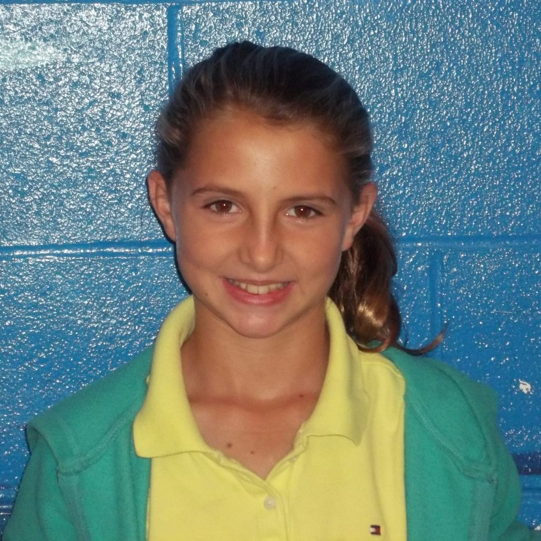
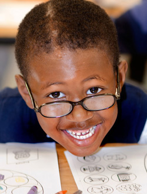
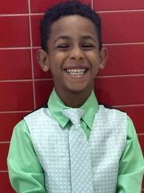
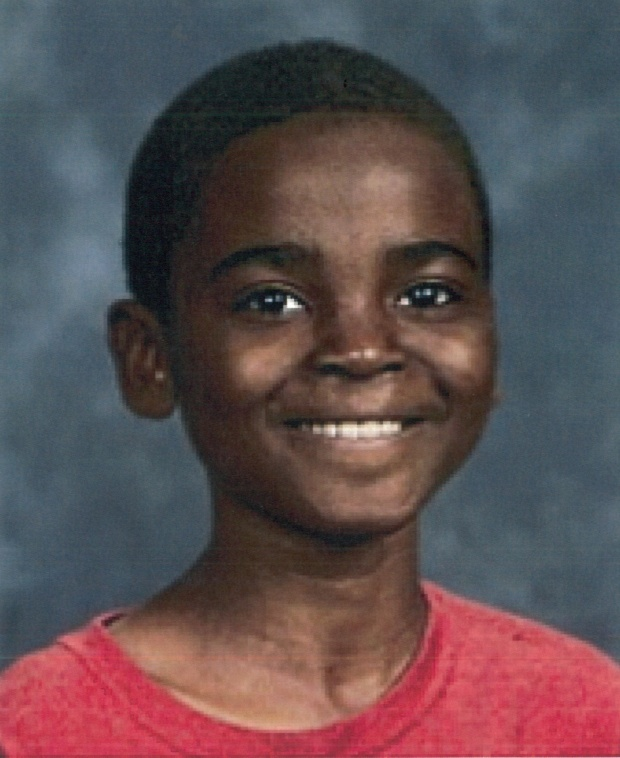
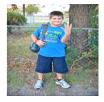
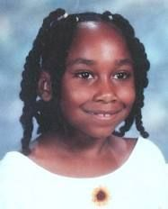
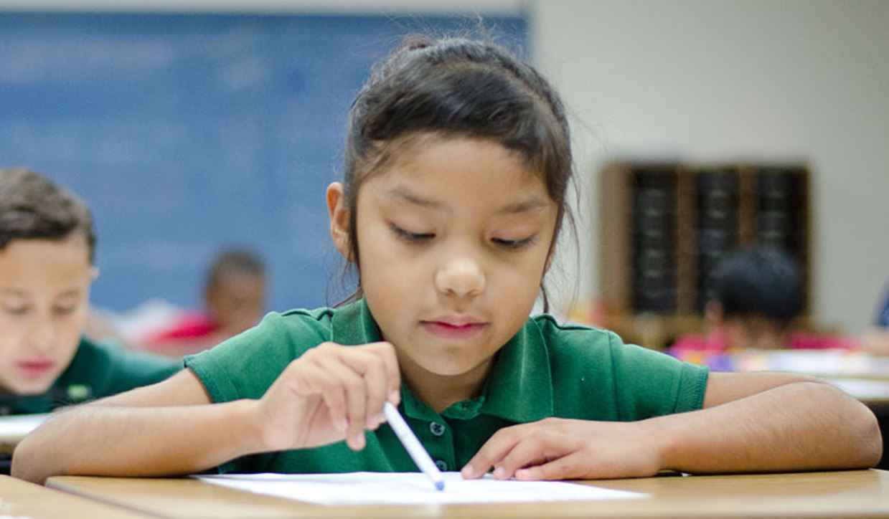

Adam is very self-conscious of his reading ability.
He does not like reading out loud
Adam was hesitant to call himself “an okay reader”.
Adam is currently reading below grade level
Adam_4th
Amanda wants to engage in the classroom activities.
Amanda is more focused in the class
She raised her hand to answer one of the questions in class and when she was not picked, she became disengaged.
She tries to determine things that she may need when learning.
Amanda_Kindergarten

Apple is quiet.
She typically does not seem to be watching or paying attention
She is listening to the teacher, even when it looks like she is looking else where
Apple_3rd

Billy he had a very positive attitude about reading
He loves to read and gets excited to read.
He would just prefer playing outside to reading if he could.
He would still read on a rainy day though!
Billy_1st

Estrella likes to read.
She began reading quietly to herself in a whisper as the teacher read with someone else
Estrella became when her classmates talked.
Estrella became more engaged and interested when shown the pictures in the books.
Estrella_1st

Finn seems to get distracted at times during lessons
He is a quiet student though
He will sometimes try to misbehave or “make a bad choice” quietly so that it may be easily go unnoticed.
Finn_2nd

Joe is usually very fidgety and talkative during class time.
At the beginning of the lesson he is sitting quietly in his seat paying attention, participating, and answering questions.
I noticed that he gets upset very easily.
Joe likes to play in the rain, not read a book.
He likes getting new books if they’re good ones like the David books
He kind of likes when teacher asks him questions.
He said it makes him feel smart when his teacher asks him to read aloud in class
Joe_3rd

During the lesson time, Joseph played with his hair, his shoes, and was lounging in his carpet spot.
He gets reprimanded for sitting to close to the teacher and is asked to scoot back.
He has to drag the words to complete the sentence.
Joseph_Kindergarten
Julia is quiet and sitting still during the morning meetings.
Julia was very interactive and seemed eager to share her reading interests.
She would rather learn something from a book than just read a story.
Julia_4th

Julio commonly mistook sight words. For instance, he mistook “the” for “his”, and “on” for “in”.
He struggled with blending the sounds together, especially the middle sounds.
Julio skipped words a few times.
Julio_3rd

Katie is listening attentively with her eyes on the teacher
She frequently answers questions, always raising her hand and never speaking out of turn.
She is the only sitting up straight with perfect posture.
Katie_1st

Liam truly enjoys learning
Liam preferred to practice his letter sounds with the group rather than individually.
Liam is easily distracted by his neighbors or the supplies on the table when he is supposed to be individually working on an activity in his seat.
Liam_Kindergarten

Struggles to stay on-task and focus
Easily distracted
Uninterested in classroom lessons
Wants attention
Doesn't choose to participate in class work
Uninterested in reading and writing
Struggles to decode words
Nathan_4th

Talon was paying attention, although she appeared to be inattentive.
She was following along with the material that is being covered in the class
The student was constantly off task and had to be directed back to her paper many times by other teachers in the classroom.
Talon_2nd

Even though Will was sitting in the very first row, closest to the board, Will was squinting at the text.
Will was definitely distracted by other students easily.
He struggles with reading, but still sees himself as a reader.
He does not like worksheets.
Will_4th

Zoe is interactive and participates in the class-wide conversation.
She would also whisper words to herself.
She was a little confused about the directions--though they were explicitly stated at the onset of the assignment--and took the opportunity to clarify when given by the teacher.
Zoe_4th
Ariana eyes are on her teacher the entire time she is talking.
She giggles at the pictures
She seems to be very motivated and very attentive student.
She has a neat handwriting.
Ariana_2nd

Jacob moved around a lot and is active and does not like to be sitting for long periods of time.
He was more distracted by things when he thought no one was paying attention directly to him.
Jacob_3rd

June was very involved in the reading lesson.
When she was reading, she didn't understand how to show expression in her reading.
June was little embarrassed and shy.
June was engaged in the classroom activities.
June_2nd

Cameron was the most talkative girl.
She wanted her peers to know she knew the right answer instead of wanting to answer it correctly.
She was attentive in the class.
Cameron_4th

Morgan paid attention in the class.
She never volunteered to read aloud.
She seems uninterested.
Morgan_5th

Robert has trouble staying still.
Robert calls out for attention.
He answers the questions correctly.
He complains that he doesn't have time to finish.
Robert_2nd

Katie struggled on some of the words in the book.
She also struggles with reading bigger words, and sounding out words.
She is very quiet in the class.
She doesn't really answers the questions when the teacher asks them, but does understand what it is about.
Katie_Kindergarten